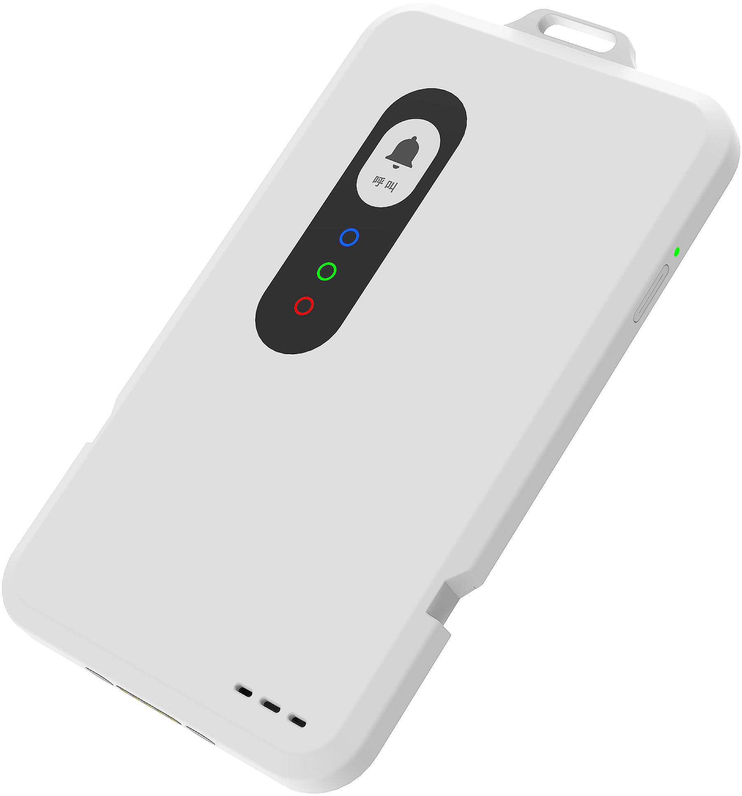
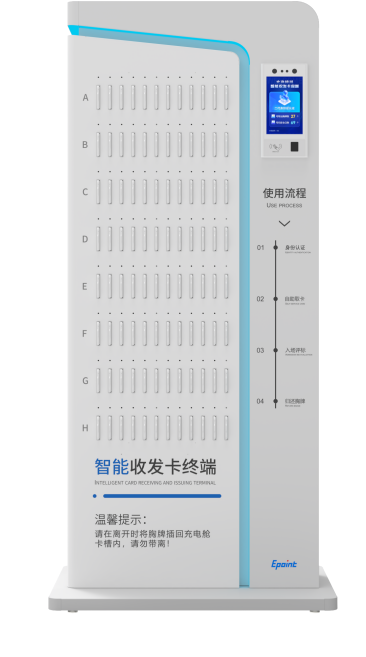
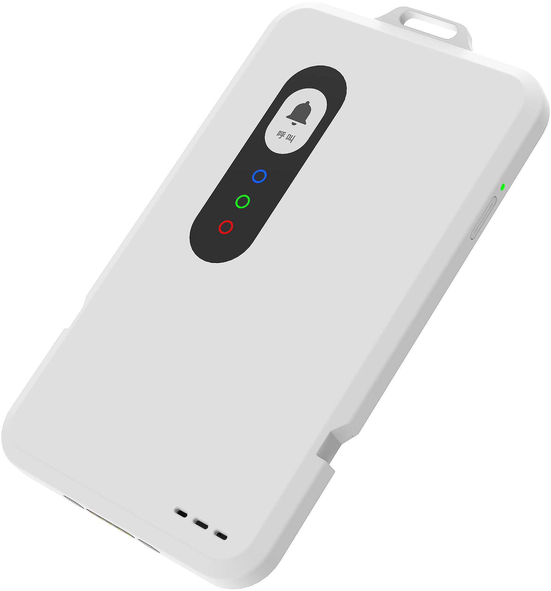
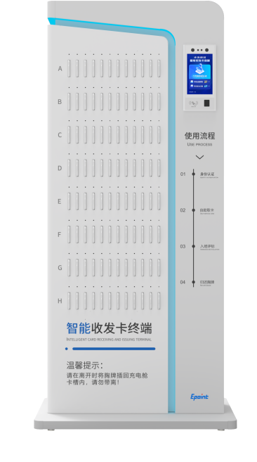

新点智能胸牌
重新定义评标区智能化管理
产品概述
新点智能胸牌（Expert Smart Recording Badge，以下简称"智能胸牌"）是一款集成了录音、轨迹定位、佩戴检测以及一键呼叫的智能化产品。用于评标区内对专家言行进行多维度管理，依据智能胸牌提供的实时录音以及专家行为轨迹，结合配套服务平台，实现评标区内人员在评标过程中全方位监管，保障评标活动的公平公正。
智能胸牌为交易中心客户提供场地数字化、流程标准化、监管无人化的场地服务标准化能力，帮助中心更高效、多维度地的对评标区内人员的活动进行合理有效的监督，助力公共资源交易中心数字化、智能化转型。
产品架构
智能胸牌ESRB的产品架构由智能胸牌及配套的硬件支撑设备、应用服务平台组成。
硬件产品
- 智能胸牌
- 智能收发卡终端
- 人员轨迹配套硬件及无线网络系统
应用服务平台
- 评标区不见面评标管控系统
- 可作为总控或数字见证系统的功能模块
 




产品能力
高精度定位
基于UWB技术，实现误差不超过30厘米的精确定位，具备实时性、低延迟及强大的抗干扰能力。
佩戴检测
内置六轴陀螺仪，实时分析佩戴状态，确保数据采集的真实有效性。
实时录音
内置高灵敏全向麦克风，对佩戴者周围音频进行采集，支持音频流与音频文件双重传输。
预警检测
基于强大的算法引擎，通过对佩戴者轨迹数据进行动态分析，精准识别违规行为。
持久续航
内置大容量聚合锂电池，支持最低10小时的运行续航，满足一天连续评标。
大容量存储
内置16GB存储，支持最长48小时录音文件离线存储，录音文件上传成功后自动删除。
NFC读写
采用近距离无线通信技术，内置NFC线圈，可作为IC卡进行读写操作。
OTA升级
支持OTA在线固件升级，日志上传，确保系统始终保持最新状态。
产品优势
客户价值
- 符合场地管理及见证相关政策要求
- 智能预警功能，及时防范违规行为
- 自助收发，降低人力成本
- 多维监管，保障评标公正
- 实时检测，确保数据有效性
竞争优势
- UWB定位，精度更高，稳定性更好
- 全域覆盖，无监管盲区
- 持续追踪，不受姿态影响
- 清晰录音，准确识别说话人